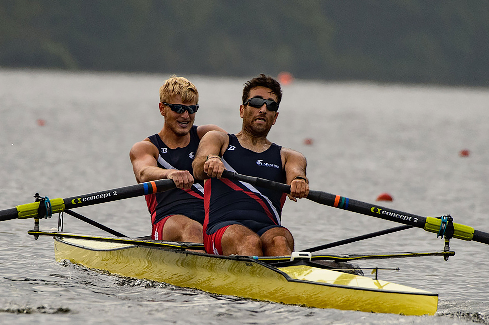

The Official website of FISA, the international rowing federation. Latest world rowing news, comprehensive live coverage from top international rowing events, rower biographies, FISA contact information, world rowing calendar, videos, photos and much more.

Zoe Mcbride (b), New Zealand, Gold,
“We knew it would be tough because the conditions have been like this all week. I think we caught our streak in the head-winds so we were actually really excited for today. We just wanted to make the most of it and have fun. It was windy, it was rainy, but that’s rowing.”
Latest News
The 2000m test for medals at World Rowing Cup III in Rotterdam
Attention, Go… lightweight and para-rowing finals in Rotterdam
Return to six lanes for semifinals at World Rowing Cup III in Rotterdam